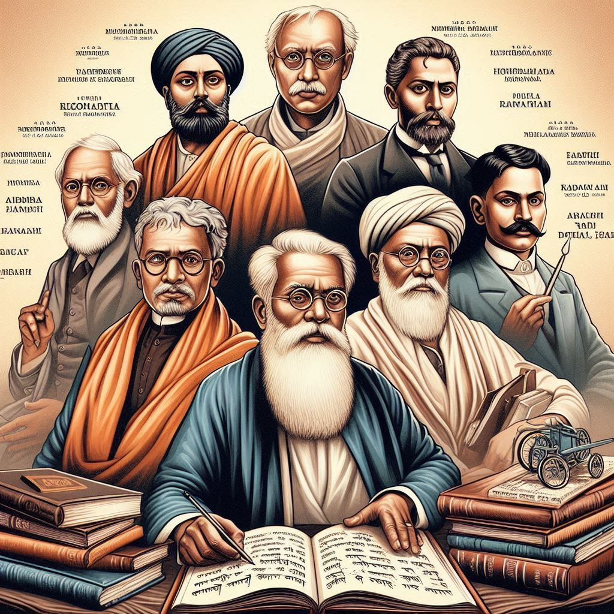
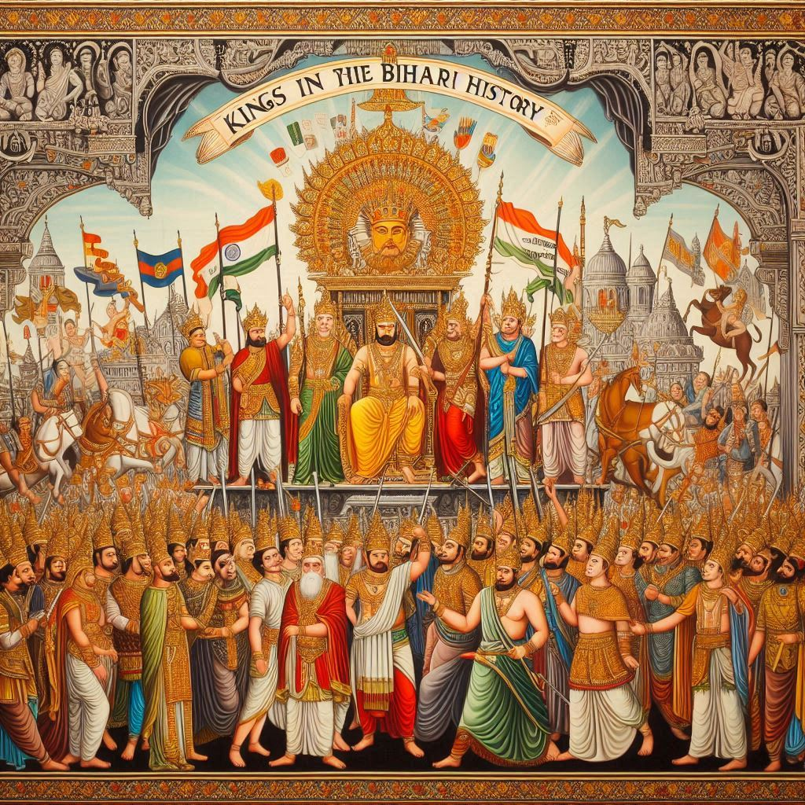

Bihar has a rich and complex history that dates back to ancient times. It has been a significant center of culture, religion, and politics in India, influencing various dynasties and civilizations. Here’s a detailed overview of the history of Bihar:
1.Ancient Period
- Indus Valley Civilization: Evidence of human habitation in Bihar can be traced back to the Indus Valley Civilization (around 2500 BCE), with archaeological findings at sites like Nalanda and Rajgir.
- Magadha Empire: Bihar was a crucial part of the ancient kingdom of Magadha, which became a prominent power during the 6th century BCE. It was the center of major empires, including the Nanda, Maurya, and Gupta empires.
- Maurya Empire: Founded by Chandragupta Maurya in the 4th century BCE, it reached its zenith under Ashoka, who spread Buddhism throughout Asia. Patna (ancient Pataliputra) was the capital and an important cultural hub.
- Gupta Empire: Considered a golden age for India, the Gupta Empire (circa 4th to 6th centuries CE) was marked by advancements in arts, science, and literature.


2.Medieval Period
- Regional Kingdoms: After the decline of the Gupta Empire, Bihar came under the rule of various regional powers, including the Madhyadesha and Mughal empires. The region witnessed the rise of various local rulers and dynasties.
- Mughal Era: The Mughal Empire (16th to 18th centuries) brought relative peace and prosperity. Patna became an important trade center, and many historical structures were built during this time.
3.British Colonial Period
- Incorporation into British India: In the late 18th century, Bihar came under British rule following the defeat of the last Mughal emperor. The region was significant for its agricultural resources and strategic location.
- 1857 Revolt: Bihar played a notable role in the First War of Independence (also known as the Sepoy Mutiny) in 1857, with significant uprisings against British rule.
- Social Reforms: The late 19th and early 20th centuries saw social reform movements aimed at improving education, women's rights, and caste inequalities.
4.Post-Independence Era
- Formation of Bihar: After India gained independence in 1947, Bihar became a state within the Indian Union. The state has faced challenges related to governance, economic development, and social issues.
- Cultural Renaissance: The late 20th century saw a resurgence of Bihari identity, with efforts to promote its rich cultural heritage, literature, and arts.
5.Modern Challenges and Developments
- Political Landscape: Bihar has experienced significant political changes and challenges since independence, including issues related to caste politics, governance, and development.
- Economic Development: In recent years, Bihar has focused on improving infrastructure, education, and healthcare, with efforts to enhance its economic prospects.
Conclusion
Bihar's history is marked by its contributions to Indian civilization through ancient empires, religious movements, and cultural advancements. Despite facing challenges in the modern era, the state continues to build on its rich legacy while striving for progress and development. From the grandeur of the Maurya Empire to the vibrant cultural renaissance of today, Bihar remains a vital part of India's historical tapestry.